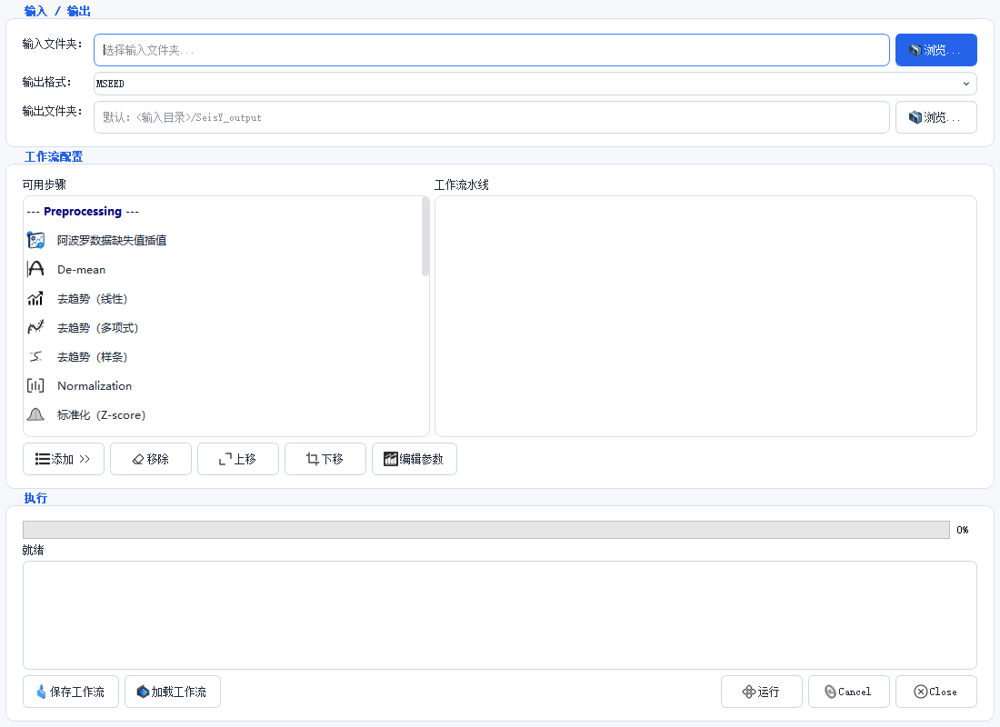

批处理

入口：工具 › 批处理工作流。
单个事件用菜单点几下就够了；几十上百个文件重复点，就需要批处理。它的本质是 把一串处理步骤保存成工作流，然后对文件夹里每个文件依次执行。
三步走
1. 指定输入输出
| 项 | 说明 |
|---|---|
| 输入文件夹 | 待处理文件的目录，可以拖拽进来 |
| 输出格式 | 默认 MSEED |
| 输出文件夹 | 留空则写到 <输入目录>/SeisY_output |
输出目录默认在输入目录下面
如果不改输出文件夹，结果会写进输入目录的子目录里。下次再扫描输入目录时
容易把上一次的产物也当成输入，跑出「处理后再次处理」的结果。
把输出指到一个独立目录可以避免这个问题。
2. 搭流水线
左边「可用步骤」按类别分组，选中后点 添加 >> 移到右边 「工作流水线」。右边就是执行顺序，从上到下。
当前可用的预处理步骤：
- 阿波罗数据缺失值插值
- De-mean（去均值）
- 去趋势（线性）
- 去趋势（多项式）
- 去趋势（样条）
- Normalization（归一化）
- 标准化（Z-score）
| 按钮 | 作用 |
|---|---|
| 添加 >> | 把左侧选中步骤加入流水线 |
| 移除 | 从流水线删掉选中步骤 |
| 上移 / 下移 | 调整执行顺序 |
| 编辑参数 | 改选中步骤的参数（如多项式阶数） |
顺序和单条处理时一样
去趋势要在滤波之前，滤波要在去响应之前。流水线里顺序反了，结果和手工做
反顺序完全一样地错——批处理不会替你纠正。
3. 保存并运行
| 按钮 | 作用 |
|---|---|
| 保存工作流 | 把当前流水线存成文件，下次直接载入 |
| 加载工作流 | 读回已保存的流水线 |
| 运行 | 开始批量处理 |
进度条显示总体进度，下方日志区逐文件输出结果。状态行从「就绪」变为运行中， 出错的文件会单独标出来，不会中断整个批次。
什么时候不该用批处理
- 需要逐条看结果的：批处理不给你逐条确认的机会。异常修复、震相拾取 这类需要人判断的步骤不要放进流水线。
- 参数还没定的：先用单条数据把参数试好，再固化成工作流。批处理里改参数 要停下来重新跑。
- 文件采样率不一致的：同一条流水线上的滤波截止频率是按固定采样率设的， 混着 6.625 Hz 和 100 Hz 的数据一起跑，结果不可用。
常见问题
跑完输出目录是空的？ 检查输出格式和输入文件夹是否真的匹配到了文件。日志区第一行会写扫描到多少个文件。
某个文件失败，其余继续吗？ 继续。失败的文件在日志里单独标出，批次不会中断。
工作流文件能在别的机器上用吗？ 可以，它是纯参数文件。但步骤依赖的参数（如多项式阶数）在两边版本不同时 可能有差异，换机器后先跑一个文件验证。